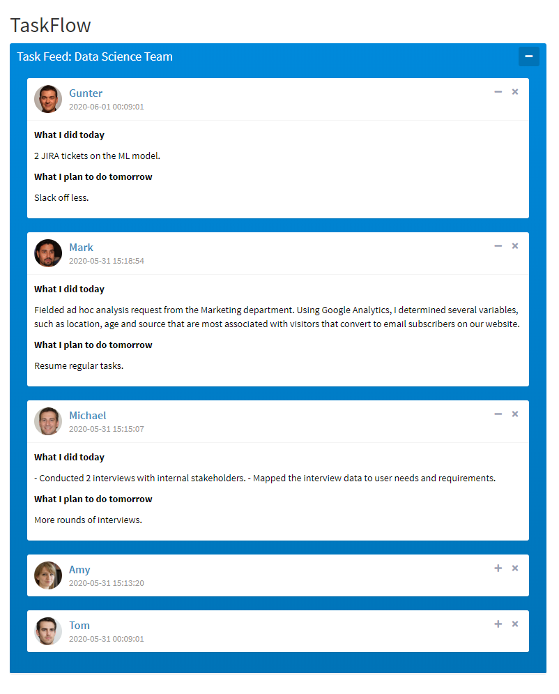

R Recipe: Social News Feed in your Shiny app
In various situations your Shiny app needs to show a stream of new submissions - new customer feedback, new sales, new internal company requests. In this recipe, I will show you how to create a social post UI function and apply it to your data with the power of the purrr package. The active part of this example is only a few lines of code, so this pattern can be easily adapted to match your needs.
Ingredients
- shiny
- shinydashboard
- shinydashboardPlus
- shinyWidgets
- googlesheets4
- dplyr
- purrr
TaskFlow: Shiny app to get updates on your team
- shiny
- shinydashboard
- shinydashboardPlus
- shinyWidgets
- googlesheets4
- dplyr
- purrr
TaskFlow: Shiny app to get updates on your team
This example app tracks daily form responses and formats them as a news feed. A manager is using a google form to receive daily updates on the work done during the day by his teammates. The google form is set to save the responses in a google sheet. Every time the shiny app is launched, it will read in the responses and format them as a news feed.

Reading in the google sheet data
The first order of business is reading in the submitted responses.
Using the new googlesheets4 package, we can easily read in the sheet by providing the link.
In this recipe the data is public, so no authentication is needed to access. Thus we call gs4_deauth() which lets us read public sheets without any authentication.
While we're at it, we arrange the responses using the Timestamp variable so that the latest responses are on top.
More adjustments can be done here, such as filtering to get the data for the last week, or load just the last 20 updates, but that is beyond the scope of this app.
gs4_deauth()
responses <- read_sheet("https://docs.google.com/spreadsheets/d/1ND2z22rjs1f-Hyt0NtDdkUGB11gnJ9odl77s8UkK-jo/") %>%
dplyr::arrange(desc(Timestamp))
Shiny UI
Now let's set up the UI. I am using a basic shiny layout extended by shinydashboard and shinydashboardPlus, enabled by shinyWidgets.
Basically call shinyWidgets::useShinydashboard() somewhere in the UI, and you can use shinydashboard and shinydashboardPlus elements like box() and gradientBox() with a basic shiny layout.
ui <- fluidPage(
titlePanel("TaskFlow"),
shinyWidgets::useShinydashboard(),
tags$head(
tags$style(HTML("
.bg-blue-gradient { color: black; }
"))
),
fluidRow(
uiOutput("newsfeed")
)
)
Basically, the UI contains a title, a CSS adjustment of font color, and the only output element uiOutput("newsfeed") which is the point of this example app.
Now let's see how to generate it.
Server
The server of this Shiny app is composed of 2 functions and the renderUI. The pic function returns a link to a photo based on who has submitted the survey, bascially a picture of Tom if the input is "Tom".
The new_post function leverages the socialBox() element from shinydashboardPlus, and generates a facebook-like post. In our case, the new_post function takes in which employee is posting, the date of the submission
and the 2 content variables - the tasks done today and the ones planned for tomorrow. In the function internals, the src variable requires a link to a photo, and the pic() function provides the corresponding link.
In the content part, there is some CSS to make the headers within the post bold.
Once the new_post function is defined, we need the apply it over the response data. I decided to include the newsfeed posts within a gradientBox which would increase the contrast and seperation between the posts.
Because gradientBox() doesn't expect other boxes within it, all the text within it is set as white, which we corrected with the CSS included in the UI above.
Since we will be applying the new_post() function over 4 varaibles - we cannot use the standard purrr::map(), but rather purrr::pmap() which can iterate over n variables.
The first argument of pmap is .l which is the list or dataframe we will be iterating over. .f is the function we're applying which is our own new_post(), preceded by a tilda ~, which if I'm not mistaken is needed everytime homemade functions are used in purrr.
Within our function we define the arguments using the notation ..1 representing that the argument will iterate over the first column of the provided element.
server <- function(input, output) {
pic <- function(name) {
if (name == "Tom") {
"https://i.ibb.co/3kHs9Pv/Tom.jpg"
} else if (name == "Gunter") {
"https://i.ibb.co/yB6qrGB/Gunter.jpg"
} else if (name == "Amy") {
"https://i.ibb.co/wyR8DBT/Amy.jpg"
} else if (name == "Michael") {
"https://i.ibb.co/b2KyzzD/Michael.jpg"
} else if (name == "Mark") {
"https://i.ibb.co/fqS4TVh/Mark.jpg"
}
}
new_post <- function (person, date, today, tomorrow) {
socialBox(title = person,
subtitle = date,
width = 12,
src = pic(person),
footer_padding = FALSE,
#Content
p("What I did today",
style="font-weight: bold;"),
p(today),
p("What I plan to do tomorrow",
style="font-weight: bold;"),
p(tomorrow)
)
}
output$newsfeed <- renderUI({
gradientBox(title = "Task Feed: Data Science Team",
width = 5,
gradientColor = "blue",
footer_padding = FALSE,
purrr::pmap(.l = responses,
.f = ~ new_post(date = ..1,
person = ..2,
today = ..3,
tomorrow = ..4))
)
})
}
Now, time for micromanagment
There you have the whole app. The code can also be found on github. Let me know how you used this code pattern to add a feed element to your app. Happy coding!
Written by Ljupcho
Have a comment? Want to be added to the R Recipes mailing list? Email Me